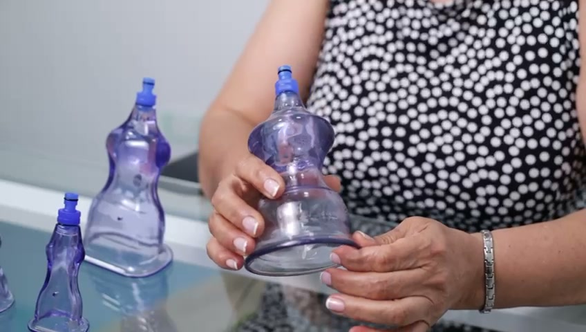
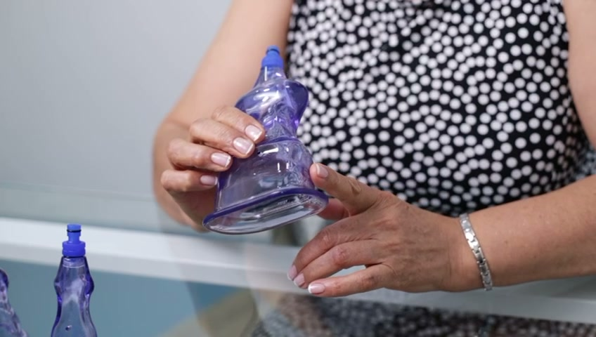

Nuestros Servicios
Desde remodelación corporal hasta recuperación postquirúrgica.
Servicio 01
Remodelación no invasiva de la silueta. Nuestra tecnología de vacío estimula la circulación, favorece el drenaje linfático y mejora la elasticidad de la piel.

Zonas del Cuerpo
Abdomen Cintura Espalda Hombros Brazos Caderas Glúteos Piernas Cuello RostroServicio 02
La preparación adecuada antes de una cirugía es fundamental para mejores resultados.
Facilita el trabajo del especialista al mejorar las condiciones del tejido.
Disminuye la probabilidad de complicaciones durante el procedimiento.
Reduce inflamación, fibrosis y acumulación de líquidos para una recuperación más ligera.
Evita fibrosis, ondulaciones, endurecimientos y alteraciones en sensibilidad de la piel.
Servicio 03
Acelera tu recuperación y mejora los resultados después de una cirugía estética.
Estimula circulación y drenaje linfático para una curación más rápida.
Suaviza fibras endurecidas de colágeno, evitando adherencias.
Facilita eliminación de líquidos acumulados mejorando la apariencia.
Define contornos y corrige irregularidades en la piel.
Servicio 04
Para quienes van al gimnasio pero no logran bajar en zonas difíciles. Rompe la grasa para que el cuerpo la evacúe naturalmente.
Abdomen, espalda, piernas, brazos — las áreas donde más cuesta bajar por más que entrenes.
Las áreas que más resisten al ejercicio:

Formación Profesional
Cursos y capacitaciones para profesionales de la estética. Formarse en técnicas de preoperatorio y posoperatorio con nuestro sistema exclusivo.
Agenda tu consulta personalizada y te recomendaremos el mejor tratamiento.